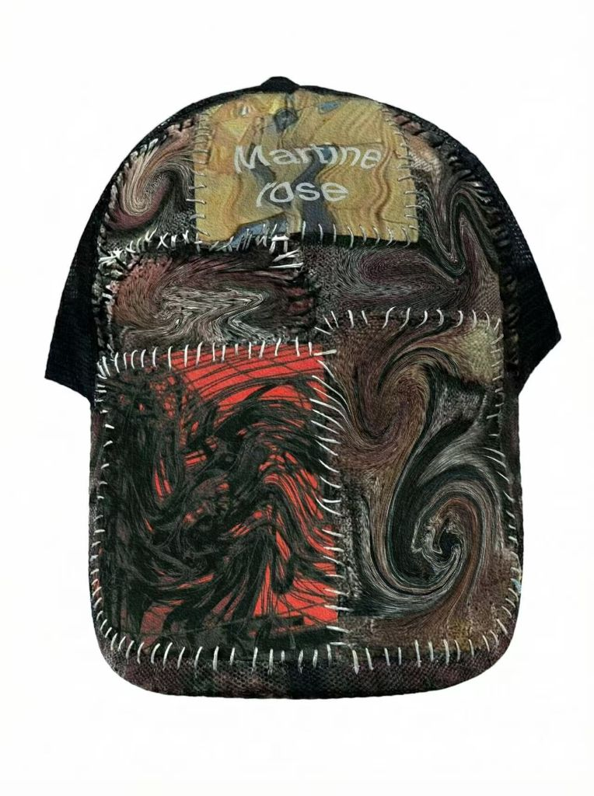
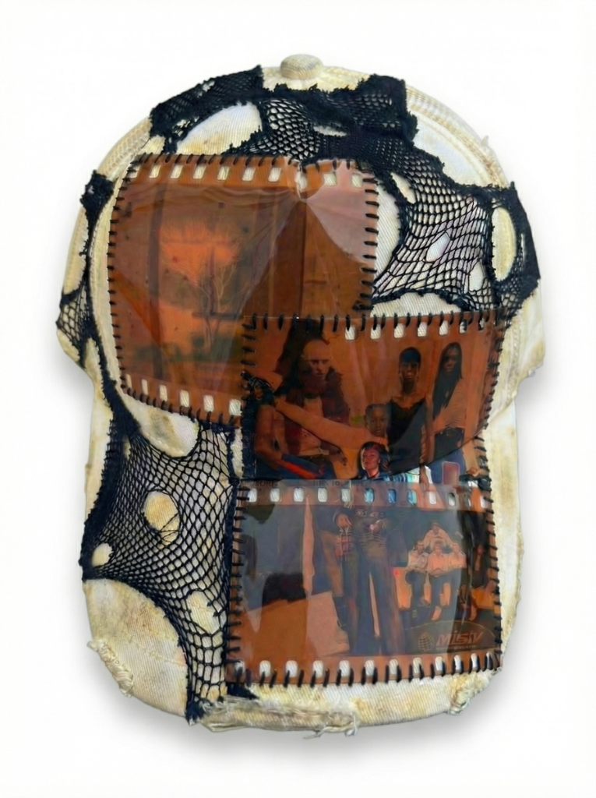
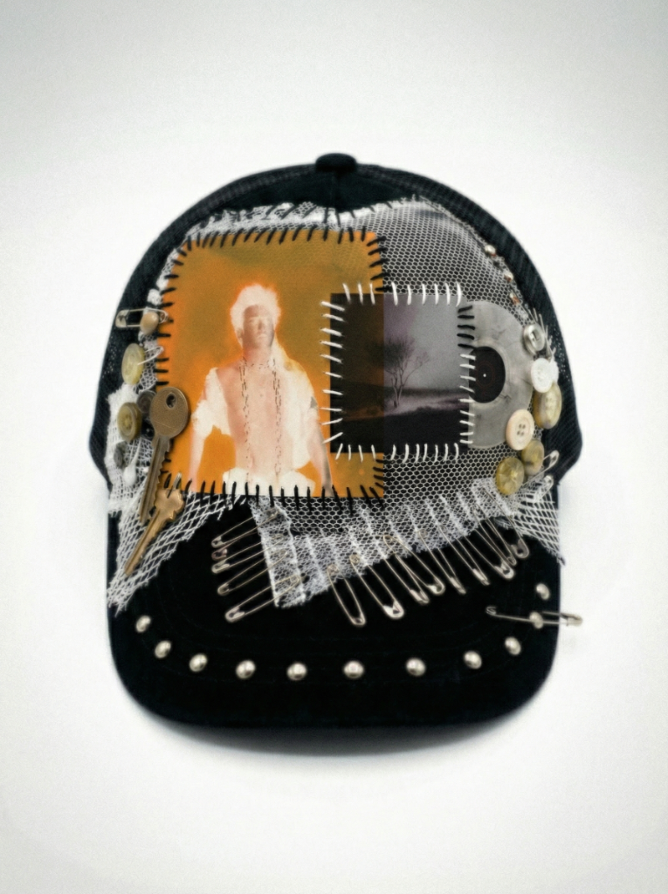
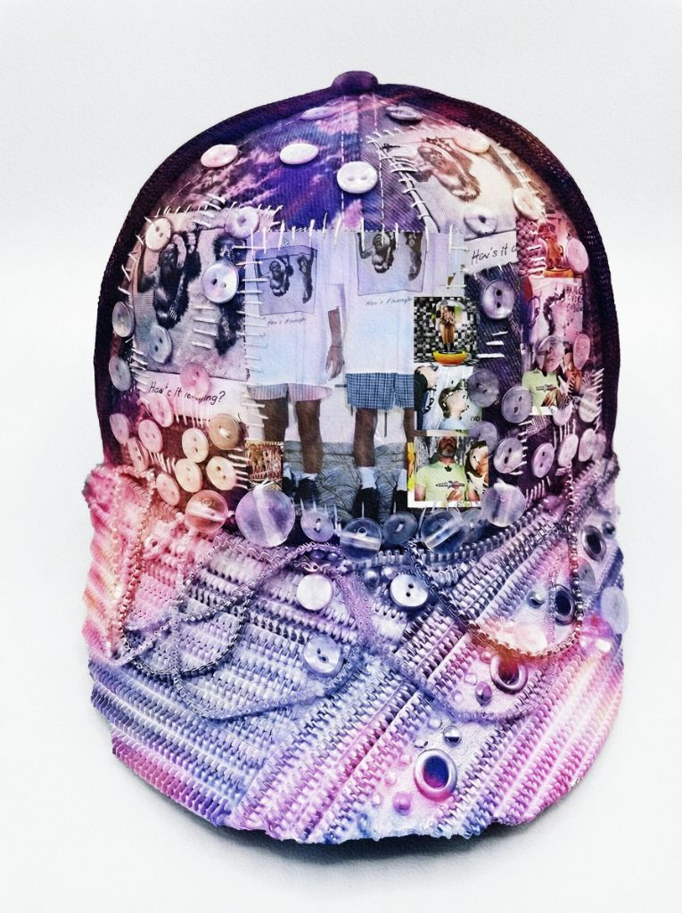
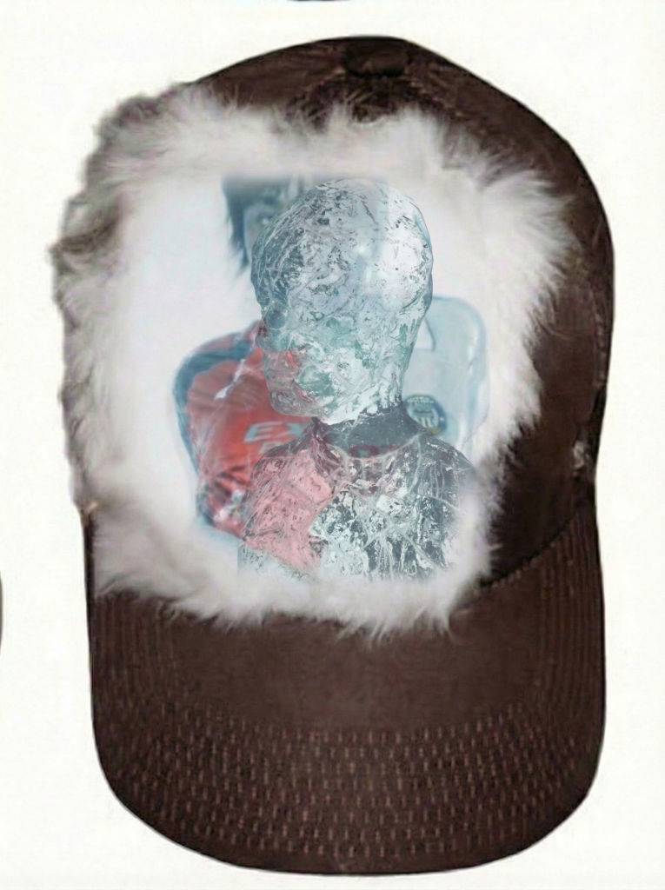
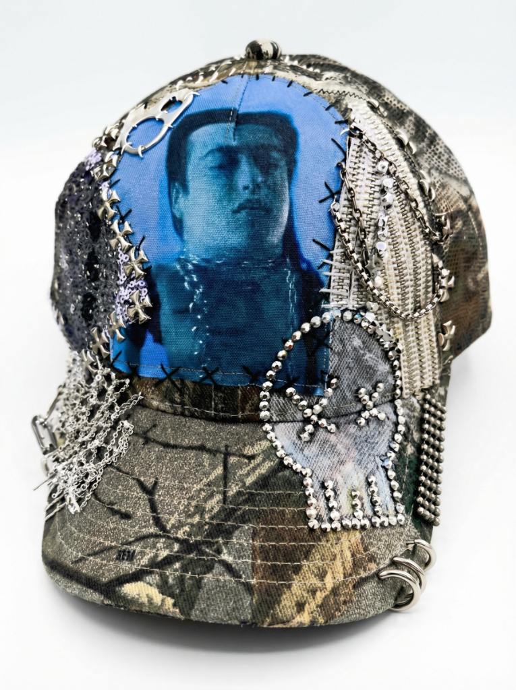

An AI-powered collaborative imaging project in dialogue with the aesthetic of Martine Rose.
Starting from AI-generated imagery, this project hand-stitches a series of caps, merging digital textures with fabric craftsmanship and exploring the creative tension between artificial intelligence and the handmade. Each cap is a conversation held between algorithm and fingertip.





